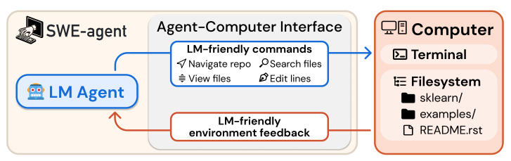
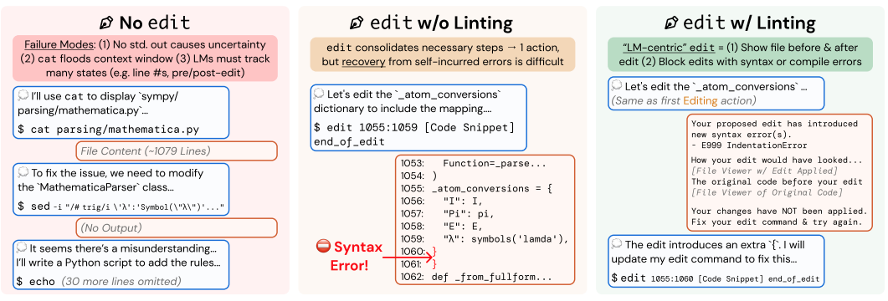
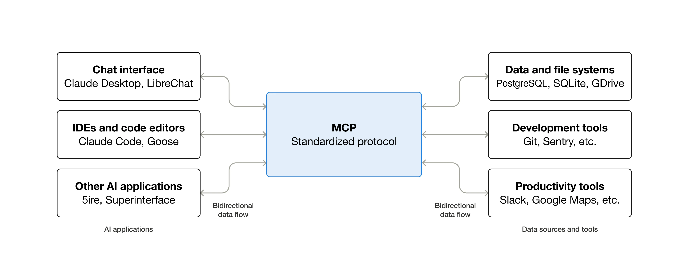
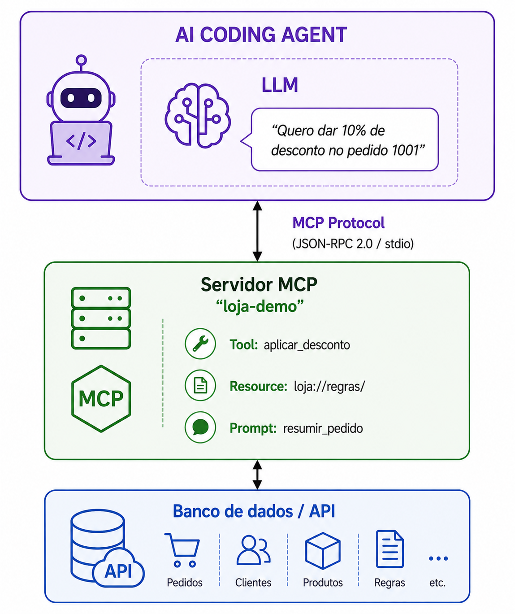
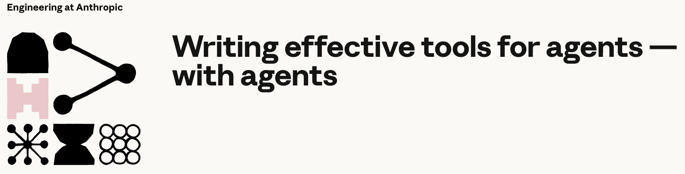

MCP: o Protocolo que Padroniza a Interface entre Agentes e Sistemas
Sumário
Ao final dessa aula, o aluno deve ser capaz de definir o que é o MCP; entender e explicar dois problemas que ele resolve (interface para agentes e integração N×M); implementar um servidor MCP; conhecer boas práticas na implementação de tools; e avaliar a qualidade de um servidor MCP.
Preâmbulo
Sobre as notas de aula. Conteúdo escrito por mim em sua totalidade. Tabelas e figura foram geradas com auxílio do Claude. Estou deixando isso claro para que você tenha ciência de que, se houver erro aqui ou achar o material ruim, a culpa é minha mesmo. As notas de aula são um guia para a discussão em sala de aula e servem muito pouco como conteúdo para estudo.
Eu não traduzi tools. Tool é um termo técnico do ecossistema de agentes com uma semântica bem definida. Se eu traduzisse para “ferramenta”, poderia confundir dependendo do contexto, porque é mais amplo.
Contexto
Agentes invocando tools representou um grande avanço na área.
Mas como isso é (pode ser) feito?
- Padronização do texto + parsing. O prompt ensina o modelo a escrever
Action: nome[argumento], e quem está por fora fica caçando esse padrão no texto com regex. - Pedir em formato JSON. Um meio-termo: pede-se ao modelo que responda em JSON seguindo um formato descrito no próprio prompt. Melhora o parsing, mas ainda não há garantia.
- Tool calling nativo. O provedor do modelo treina o próprio modelo para emitir a chamada como um tipo de saída estruturado, validado contra um schema que o desenvolvedor declara antes (nome, tipos, quais argumentos são obrigatórios). Quem recebe não faz mais parsing de texto solto, recebe algo já tipado e checado. É assim que os agentes funcionam hoje.
Como projetar uma interface para um consumidor que não lê documentação, não é determinístico, e é sensível a tudo que está no contexto ao seu redor? Projetando interfaces para os mesmos: Agent-Computer Interface.
Relembrando ACI


Podemos enxergar ACI como um princípio de design: escrever APIs que sejam adequadas para os agentes consumirem.
É tudo sobre os princípios:
- Actions should be simple and easy to understand for agents.
- Actions should be compact and efficient.
- Environment feedback should be informative but concise.
- Guardrails mitigate error propagation and hasten recovery.
Escrever para o agente ler é uma habilidade de engenharia.
MCP é um protocolo que padroniza descoberta e invocação de tools entre agente e sistema. Uma implementação do princípio de ACI.

Implementar servidor MCP é aplicar ACI na prática.
MCP Server: expõe tools, dados e prompts que podem ser utilizados pelo agente.
Três primitivas:
- Tools: ação, algo que o agente executa.
- Resources: dado, algo que o agente lê (sem efeito colateral).
- Prompts: template, uma interação reutilizável que o servidor sugere, para o host oferecer ao agente ou ao usuário.
Pergunta
Não basta passar a documentação da API para o modelo?
- Contexto: doc inteira consome muito e degrada desempenho (Lost in the Middle, Context Rot).
- Confiabilidade: chamada gerada livre a cada vez, erro silencioso.
- Reuso: aprendizado via contexto não persiste entre sessões.
- Interoperabilidade: N×M virou N+M. Um protocolo comum para todos os provedores.
- Segurança: acesso amplo via documentação e credenciais versus escopo controlado por servidor.
Visão Geral

MCP: um exemplo prático
Preâmbulo
Repositório do exemplo: github.com/dev-ia-ufcg/material/tree/main/mcp.
SDK: modelcontextprotocol.io/docs/2026-07-28/sdk.
Visão Geral do Código
| Arquivo | O que faz |
|---|---|
python/server.py |
Servidor MCP expondo 1 tool, 1 resource, 1 prompt |
python/client.py |
Cliente programático com logging de todo o tráfego JSON-RPC |
python/trace-completo.txt |
Trace pré-capturado (fallback garantido) |
| Primitivo | Nome | O que faz |
|---|---|---|
| Tool | aplicar_desconto |
Ação. O LLM decide chamar para aplicar um cupom e calcular novo valor. |
| Resource | loja://regras/cupons |
Documento read-only. A tabela de cupons e regras de desconto da loja. |
| Prompt | resumir_pedido |
Template que o servidor gera para o LLM usar. |
Setup
cd python
python3 -m venv .venv
./.venv/bin/pip install mcp
MCP Server
@server.tool()
def aplicar_desconto(id_pedido: str, cupom: str) -> str:
"""Aplica um cupom de desconto a um pedido e devolve o novo valor a pagar."""
Anotação para definir uma tool.
Docstring como description para o agente.
Parâmetros viram inputSchema automaticamente.
Se der erro, levanta ToolError e o servidor retorna isError: true.
Resource
@server.resource(
"loja://regras/cupons",
title="Regras de descontos e cupons",
description="Documento de somente leitura com a tabela de cupons e regras de desconto da loja.",
mime_type="application/json",
)
def regras_cupons() -> str:
return json.dumps(CUPONS, ensure_ascii=False, indent=2)
Resource é um endpoint de dados read-only, identificado por URI.
Um arquivo de config, um PDF, uma imagem que o servidor expõe.
O cliente pode pedir a qualquer momento. Não depende de decisão do LLM.
Retorna JSON com todos os pedidos.
Diferença entre tool e resource:
“Diferença fundamental: Tool o LLM escolhe chamar. Resource o host/cliente puxa quando precisa.”
- Tools: model-controlled, o próprio modelo decide quando invocar, dentro do loop do agente.
- Resources: application-controlled, o host ou o usuário decide quando ler e anexar, o modelo não busca sozinho.
Exemplo concreto, dois cenários que mostram a diferença:
- Cenário A, usuário decide: o painel tem um botão “anexar recurso”, lista os resources do servidor loja-demo, o atendente clica em “Lista de pedidos” antes de perguntar algo ao agente.
- Cenário B, host (por exemplo, Claude Code) decide sozinho: o código do painel tem uma regra fixa, tipo “toda conversa nova já começa com pedidos://todos anexado”, nenhum clique do atendente.
- Nos dois casos, quem decide não é o modelo. Ele não chama
resources/readpor iniciativa própria, do jeito que chamariaconsultar_pedido.
Contraste direto com tools, usando o mesmo exemplo:
- Tool: o atendente pergunta “qual o status do pedido 1001”, o modelo decide sozinho chamar
consultar_pedido, dentro do loop. - Resource: o modelo nunca decide sozinho ler
pedidos://todos. Alguém fora do loop, painel ou atendente, decide isso antes.
Definições importantes:
- Host = o cliente (o
client.pyque escrevemos, ou no mundo real o OpenCode / Claude Desktop / Cursor / Copilot). - Usuário = a pessoa que opera o host.
Prompt
@server.prompt(
title="Resumir pedido para o cliente",
description="Gera um template de mensagem resumindo um pedido para o cliente.",
)
def resumir_pedido(id_pedido: str) -> str:
- Prompt não executa nada. Retorna um template de mensagem.
- O servidor diz ao LLM: “quando for resumir o pedido X, use essa instrução”.
- O resultado tem
role: "user"com o texto pronto. - É como se o servidor injetasse um system prompt sob demanda.
“Prompt é o mecanismo mais sutil: o servidor não executa, não retorna dados. Ele guia o LLM.”
Cliente
Cada bloco print + await corresponde a uma etapa do protocolo:
| Linha | Método | O que faz |
|---|---|---|
| 72 | session.initialize() |
Handshake |
| 75 | session.list_tools() |
Descobre tools disponíveis |
| 78 | session.call_tool(...) |
Chama tool com sucesso (cupom 10OFF) |
| 81 | session.call_tool(...) |
Chama tool com erro (cupom inválido) |
| 84 | session.list_resources() |
Descobre resources disponíveis |
| 87 | session.read_resource(...) |
Lê o resource loja://regras/cupons |
| 90 | session.list_prompts() |
Descobre prompts disponíveis |
| 93 | session.get_prompt(...) |
Obtém template do prompt |
No OpenCode: documentação de MCP servers.
O trace
Tool
“Tools are a new kind of software which reflects a contract between deterministic systems and non-deterministic agents.”
// Request
{ "method": "tools/call", "params": { "name": "aplicar_desconto",
"arguments": {"id_pedido": "1001", "cupom": "10OFF"} } }
// Response
{ "result": { "content": [{"text": "Cupom 10OFF aplicado... Valor original R$ 349.90 -> novo valor R$ 314.91"}],
"isError": false } }
“Tool: o LLM manda argumentos, o servidor executa a ação (calcula o desconto) e devolve o resultado. Tem
isError, pode falhar. É uma operação.”
Resource
// Request
{ "method": "resources/read", "params": { "uri": "loja://regras/cupons" } }
// Response
{ "result": { "contents": [{"mimeType": "application/json",
"text": "{ \"10OFF\": { \"tipo\": \"percentual\", ... } }" }] } }
“Resource: sem argumentos complexos, só a URI. O servidor devolve o documento com a tabela de cupons. Não calcula nada, não tem
isError.”
Prompt
// Request
{ "method": "prompts/get", "params": { "name": "resumir_pedido", "arguments": {"id_pedido": "1001"} } }
// Response
{ "result": { "messages": [{"role": "user", "content": {"text": "Resuma o pedido 1001..."}]} } }
“Prompt: retorna uma mensagem com
role: 'user'. O servidor está dizendo ao LLM o que fazer.”
Generalizando
Exemplos de MCP servers populares:
- Filesystem: tools para ler/escrever arquivos + resources para abrir documentos.
- GitHub: tools para issues, PRs, repos.
- PostgreSQL: tools para queries, resources para schema/documentação.
- Slack: tools para enviar mensagens.
Qualquer um de vocês pode/deve criar um servidor MCP seguindo exatamente esse padrão.
Discussão (1/2)
Por que estamos vendo MCP? Porque somos desenvolvedores que vamos potencialmente melhorar a vida dos agentes ao usarem os sistemas que operamos/desenvolvemos. É preciso escrever código para agentes lerem.
Problema. Uma tool por endpoint.
Segurança. O servidor controla o que o LLM pode acessar.
Descoberta. O LLM não precisa “saber” o que o servidor faz. Ele descobre via list_tools, list_resources e list_prompts.
Padronização. Antes do MCP, cada ferramenta tinha sua integração. MCP unifica tudo num protocolo único.
Discussão (2/2)

“Tools are a new kind of software which reflects a contract between deterministic systems and non-deterministic agents.”
“Instead of writing tools and MCP servers the way we’d write functions and APIs for other developers or systems, we need to design them for agents.”
Avalie seu servidor/suas tools.
Evite avaliações muito simplistas. Avaliações boas tipicamente envolvem chamadas a múltiplas tools.
Alguns bons exemplos de tasks:
- “Schedule a meeting with Jane next week to discuss our latest Acme Corp project. Attach the notes from our last project planning meeting and reserve a conference room.”
- “Customer ID 9182 reported that they were charged three times for a single purchase attempt. Find all relevant log entries and determine if any other customers were affected by the same issue.”
- “Customer Sarah Chen just submitted a cancellation request. Prepare a retention offer. Determine: (1) why they’re leaving, (2) what retention offer would be most compelling, and (3) any risk factors we should be aware of before making an offer.”
Alguns exemplos ruins de tasks:
- “Schedule a meeting with jane@acme.corp next week.”
- “Search the payment logs for
purchase_completeandcustomer_id=9182.” - “Find the cancellation request by Customer ID 45892.”
Princípios
Implementando as tools certas
Mais tools não significa melhores resultados. Não implementar uma tool por endpoint.
LLMs possuem limitação de contexto. Retornar todos os contatos para depois procurar não é ideal. search_contacts é melhor do que list_all e get(id).
Tools can consolidate functionality, handling potentially multiple discrete operations (or API calls) under the hood.
Exemplos:
- “Instead of implementing a
list_users,list_events, andcreate_eventtools, consider implementing aschedule_eventtool which finds availability and schedules an event.” - “Instead of implementing a
read_logstool, consider implementing asearch_logstool which only returns relevant log lines and some surrounding context.” - “Instead of implementing
get_customer_by_id,list_transactions, andlist_notestools, implement aget_customer_contexttool which compiles all of a customer’s recent & relevant information all at once.”
Too many tools or overlapping tools can also distract agents from pursuing efficient strategies.
Nomeando suas tools
Lembre-se que os agentes são conectados a múltiplos servidores, então agrupe tools/resources relacionados com prefixo definido (por exemplo, asana_search, jira_search).
Retornando contexto
Tools têm que retornar somente contexto relevante para os modelos.
Tools devem priorizar a relevância contextual em vez da flexibilidade e evitar identificadores técnicos de baixo nível.
We’ve found that merely resolving arbitrary alphanumeric UUIDs to more semantically meaningful and interpretable language (or even a 0-indexed ID scheme) significantly improves Claude’s precision in retrieval tasks by reducing hallucinations.
Uma boa técnica é deixar o agente escolher o nível de detalhe.
You can enable both by exposing a simple
response_formatenum parameter in your tool, allowing your agent to control whether tools return"concise"or"detailed"responses.
enum ResponseFormat {
DETAILED = "detailed",
CONCISE = "concise"
}
Otimizando contexto
Otimizar a quantidade de contexto é muito importante.
We suggest implementing some combination of pagination, range selection, filtering, and/or truncation with sensible default parameter values for any tool responses that could use up lots of context.
Claude Code usa 25k tokens atualmente.
Se decidir truncar, avise ao modelo: “The results are truncated. Showing first 3 results. To refine results, you can…”
Mensagens de erro com exemplos é melhor do que JSON encapsulando erros.
Engenharia de prompting para as descrições de tools e specs
Talvez o mais importante.
“O Claude Sonnet 3.5 alcançou desempenho de estado da arte na avaliação SWE-bench Verified depois que fizemos refinamentos precisos nas descrições das tools, reduzindo drasticamente as taxas de erro e melhorando a conclusão das tarefas.”
Como elas são carregadas no contexto dos agentes, podem orientar os mesmos a serem mais eficazes ao chamar tools.
Escreva como se fosse orientar um dev júnior.
Considere deixar explícito o contexto que é tipicamente implícito. Por exemplo, formato de queries, definições particulares do seu contexto, relacionamento entre recursos, input e output esperados etc.
Fuja da ambiguidade. user_id ao invés de user.
Resumo de boas práticas
Fonte: Best practices for tool definitions.
- Provide extremely detailed descriptions.
- Prioritize descriptions, but consider using
input_examplesfor complex tools. - Consolidate related operations into fewer tools.
- Use meaningful namespacing in tool names.
- Design tool responses to return only high-signal information.
Próximas aulas
Prompting e engenharia de contexto.
Referências
- Model Context Protocol
- Writing effective tools for agents, with agents (Engineering at Anthropic)